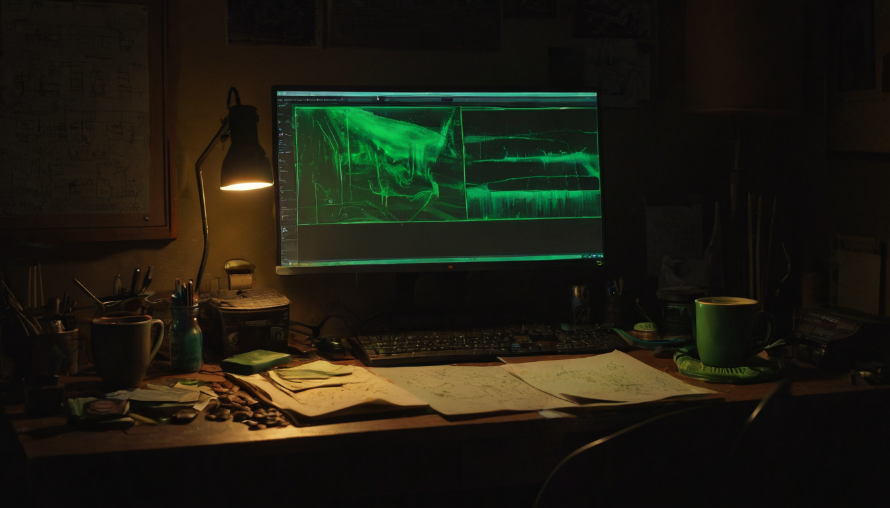

When @bytesandblocks posted a 10 XCH memecoin giveaway, the most telling detail was the prize structure: the winner picks which Chia memecoin they want.
[hero]
@bytesandblocks posted a giveaway on X offering 10 XCH in any Chia memecoin of the winner's choice. Entry required following @busymfpurr and @_6ess, liking and retweeting the post, and dropping an XCH wallet address in the comments. Standard giveaway format, but the details matter: the prize is denominated in XCH and the winner picks which Chia memecoin to receive it in.
The fact that someone can run a giveaway with "pick your Chia memecoin" as the prize says something real about where the ecosystem is. Meme token culture usually arrives once an L1 has enough community mass and tooling to support it. Chia's CAT (Chia Asset Token) standard makes it technically straightforward to create and transfer fungible tokens on-chain, and the ecosystem growing to include a memecoin layer is a natural progression, whether you are excited about it or just observing it.
Giveaway campaigns like this serve a function beyond the prize itself. They introduce XCH wallet setup to people who might not have one, pull new followers into niche accounts building in the Chia space, and create a small social moment around the ecosystem that organic posting rarely generates on its own.
[explainer]
What this kind of campaign does: The follow-and-RT format puts the Chia ecosystem in front of followers who may not have seen it before. Each reply with a wallet address is someone who has set up or already has an XCH wallet, which is a real onboarding step.
Who is running it: @bytesandblocks is organizing, tagging @busymfpurr and @_6ess as the accounts to follow. This kind of community coordination between accounts is how small ecosystems grow by cross-pollinating audiences.
What it reveals about the tooling: The fact that the winner can specify which Chia memecoin to receive means there are enough options to make that choice interesting. It also means the organizer has to be set up to send whichever CAT token is requested. There is operational depth here even if the post is casual.
What is worth noting: Giveaway mechanics are a blunt instrument. They generate follows and engagement, but the quality of that engagement depends on what comes after. The more interesting signal is who is building this culture and what they are posting when there is no giveaway running.
I like seeing this. Chia memecoin activity is not what most people in the ecosystem talk about, but it is a real signal of community health when people start creating, trading, and giving away tokens for fun. The CAT standard makes this kind of thing possible and relatively low-friction.
What I find genuinely interesting is the "pick your memecoin" structure. That is a community that has developed enough variety to have options worth choosing between.
Follow @busymfpurr and @_6ess if you want to see what the Chia community is doing day to day outside the technical roadmap. The memecoin and token layer on Chia is worth keeping an eye on, not for price speculation, but to understand which communities are actually forming and what they are building around the chain.
Source: X post by @bytesandblocks, https://x.com/i/web/status/2078544603922251886, retrieved 2026-07-18.
Accounts mentioned: @busymfpurr, @_6ess.
No external links were included in the source post.